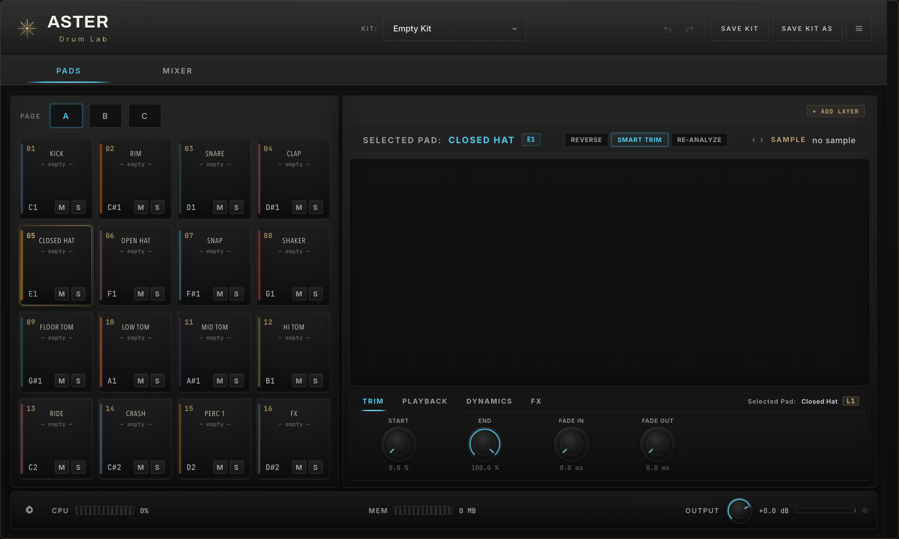
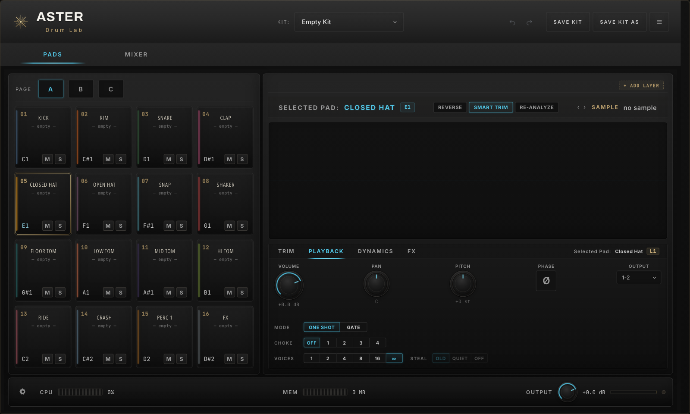
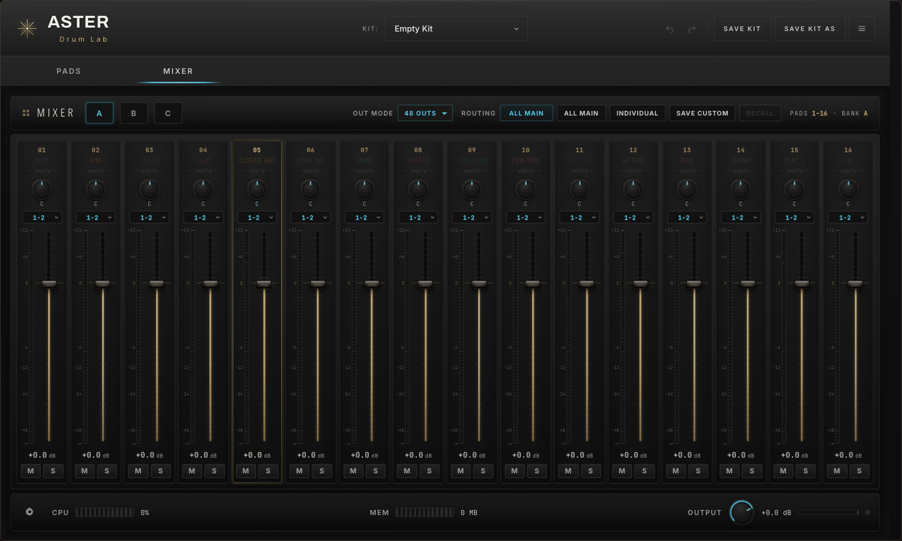

Quick Guide
48 pads, layered sample editing, detailed playback control, and mixer routing in one focused drum instrument.
Version guide / 2026.06.04
Overview
ASTER Drum Labは、左側でPadを選び、右側でサンプルとパラメータを編集するレイアウトです。上部のタブでPadsとMixerを切り替えます。
Padを選択し、サンプル、レイヤー、再生設定を編集します。Page A/B/Cで48 Padを切り替えます。
各Padの音量、Pan、Mute/Solo、Output Assignを一覧で調整します。
Pad Browser
Padグリッドは16個単位で表示されます。各Padには番号、名前、MIDIノート、Mute/Soloがまとまっています。
Sample Editor
選択中Padのサンプル表示、Reverse、Smart Trim、Re-analyze、Layer追加は右側のエディタに集約されています。
Start / Endで再生範囲を決め、Fade In / Fade Outでクリックノイズを整えます。Smart Trimを使うと無音部分の処理を素早く確認できます。
Playback
PLAYBACKタブでは、音量、Pan、Pitch、位相、再生モード、Choke、発音数、Output Assignを設定します。

Volume / Pan / Pitch Output Mode / Choke / VoicesOne Shotは最後まで再生、Gateは入力が続いている間だけ再生します。
Chokeで鳴り止めグループを作り、Voicesで同時発音数を制限します。
Mixer
Mixer画面では、現在のBankにある16 Padの音量、Pan、Output、Mute/Soloを横一列で操作できます。

Bank A/B/C Out Mode Mute / SoloPadごとにPan、Output Assign、フェーダー、Mute/Soloを調整します。
All Main、Individual、Customなど、制作環境に合わせた出力構成を選べます。
Routing & Display
ルーティングはMixer上部に集約されています。表示サイズは右上メニューから変更できます。
Out ModeとRoutingを使い、DAW側の出力構成に合わせます。
UI Sizeは50%から200%まで変更できます。
まずはPads画面で音色を選び、TRIMで再生範囲を整え、PLAYBACKで鳴り方を決めます。最後にMixerで音量と出力をまとめて調整します。